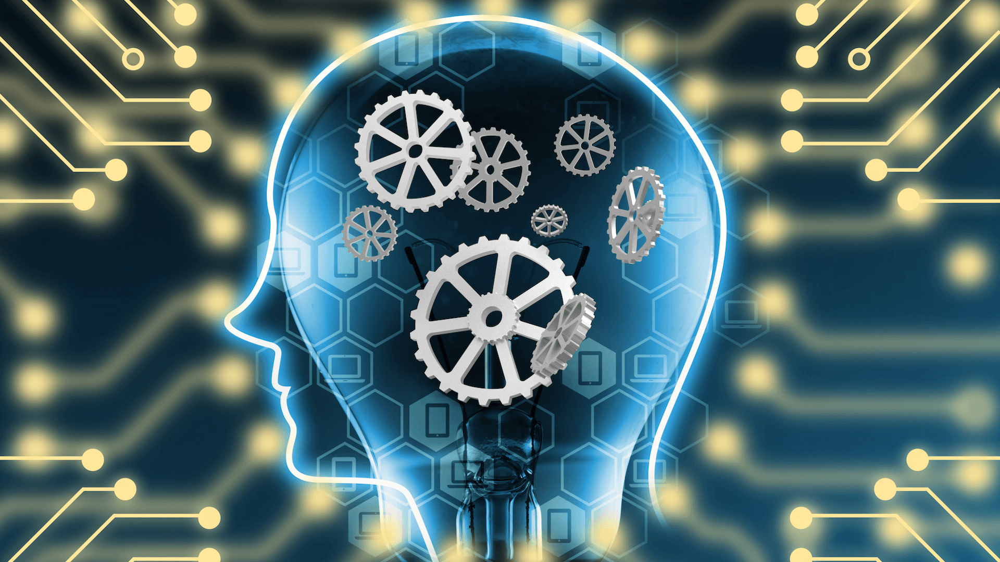

Artificial intelligence (AI) is intelligence demonstrated by machines, unlike the natural intelligence displayed by humans and animals, which involves consciousness and emotionality. The distinction between the former and the latter categories is often revealed by the acronym chosen.'Strong' AI is usually labelled as AGI (Artificial General Intelligence) while attempts to emulate 'natural' intelligence have been called ABI (Artificial Biological Intelligence). Leading AI textbooks define the field as the study of "intelligent agents": any device that perceives its environment and takes actions that maximize its chance of successfully achieving its goals. Colloquially, the term "artificial intelligence" is often used to describe machines (or computers) that mimic "cognitive" functions that humans associate with the human mind, such as "learning" and "problem solving".
As machines become increasingly capable, tasks considered to require "intelligence" are often removed from the definition of AI, a phenomenon known as the AI effect. A quip in Tesler's Theorem says "AI is whatever hasn't been done yet." For instance, optical character recognition is frequently excluded from things considered to be AI, having become a routine technology.[8] Modern machine capabilities generally classified as AI include successfully understanding human speech, competing at the highest level in strategic game systems (such as chess and Go), autonomously operating cars, intelligent routing in content delivery networks, and military simulations.The traditional problems (or goals) of AI research include reasoning, knowledge representation, planning, learning, natural language processing, perception and the ability to move and manipulate objects. General intelligence is among the field's long-term goals. Approaches include statistical methods, computational intelligence, and traditional symbolic AI. Many tools are used in AI, including versions of search and mathematical optimization, artificial neural networks, and methods based on statistics, probability and economics. The AI field draws upon computer science, information engineering, mathematics, psychology, linguistics, philosophy, and many other fields.The field was founded on the assumption that human intelligence "can be so precisely described that a machine can be made to simulate it". This raises philosophical arguments about the mind and the ethics of creating artificial beings endowed with human-like intelligence. These issues have been explored by myth, fiction and philosophy since antiquity. Some people also consider AI to be a danger to humanity if it progresses unabated. Others believe that AI, unlike previous technological revolutions, will create a risk of mass unemployment.
Artificial intelligence was founded as an academic discipline in 1955, and in the years since has experienced several waves of optimism, followed by disappointment and the loss of funding (known as an "AI winter"), followed by new approaches, success and renewed funding. After AlphaGo successfully defeated a professional Go player in 2015, artificial intelligence once again attracted widespread global attention. For most of its history, AI research has been divided into sub-fields that often fail to communicate with each other. These sub-fields are based on technical considerations, such as particular goals (e.g. "robotics" or "machine learning"), the use of particular tools ("logic" or artificial neural networks), or deep philosophical differences.Sub-fields have also been based on social factors (particular institutions or the work of particular researchers).
The traditional problems (or goals) of AI research include reasoning, knowledge representation, planning, learning, natural language processing, perception and the ability to move and manipulate objects. General intelligence is among the field's long-term goals. Approaches include statistical methods, computational intelligence, and traditional symbolic AI. Many tools are used in AI, including versions of search and mathematical optimization, artificial neural networks, and methods based on statistics, probability and economics. The AI field draws upon computer science, information engineering, mathematics, psychology, linguistics, philosophy, and many other fields.
The field was founded on the assumption that human intelligence "can be so precisely described that a machine can be made to simulate it". This raises philosophical arguments about the mind and the ethics of creating artificial beings endowed with human-like intelligence. These issues have been explored by myth, fiction and philosophy since antiquity. Some people also consider AI to be a danger to humanity if it progresses unabated. Others believe that AI, unlike previous technological revolutions, will create a risk of mass unemployment.
In the twenty-first century, AI techniques have experienced a resurgence following concurrent advances in computer power, large amounts of data, and theoretical understanding; and AI techniques have become an essential part of the technology industry, helping to solve many challenging problems in computer science, software engineering and operations research.